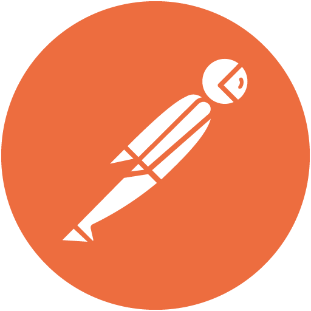
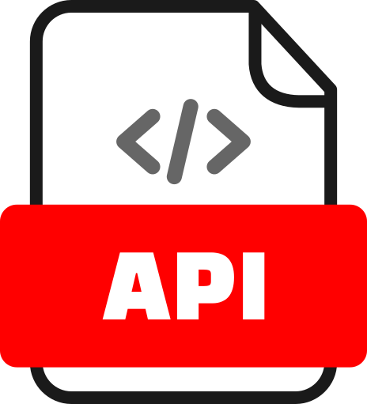

Olá👋, meu nome é


Desenvolvedor
Front End &
UX/UI Designer
Localizado no Rio de Janeiro
Olá👋, meu nome é
Localizado no Rio de Janeiro
Me chamo Dário Ribeiro e crio interfaces centradas no usuário, unindo HTML, CSS, JavaScript, conceitos e boas práticas de UX/UI Designer. Com esse foco desenvolvi o Plantnet, CInfra, Roleh e Bikcraft.
Aplicativo com um acervo de Plantas Alimentícias Não Convencionais (PANCs) e plantas medicinais. Oferece receitas e informações sobre o uso de plantas no tratamento de enfermidades, com filtros por órgão afetado.
Projeto de gestão de infraestrutura para o Centro de Informática. A interface conecta alunos, professores e a equipe de manutenção predial, permitindo que os usuários reservem espaços e verifiquem o estado de limpeza e operação de salas e laboratórios.
Criação de documentação técnica e manual de uso para um sistema ERP, garantindo clareza e suporte ao usuário como complemento às práticas de UX. Reduziu-se em 20% o tempo de implantação e facilitou a curva de aprendizagem dos clientes.


Projeto voltado à conexão entre clientes e estabelecimentos. A interface permite que pessoas descubram eventos de diferentes tipos na cidade onde estão, enquanto os organizadores podem divulgá-los de forma acessível.


Minha mais recente experiência acadêmica foi minha graduação🎓 Bacharel em Ciência da Computação - UFPB. Além disso me mantenho sempre ativo e atualizado com cursos intensivos online.